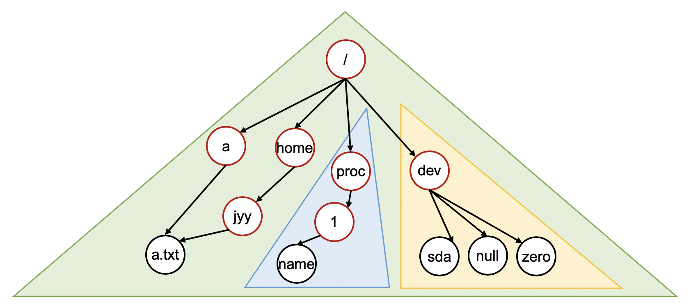
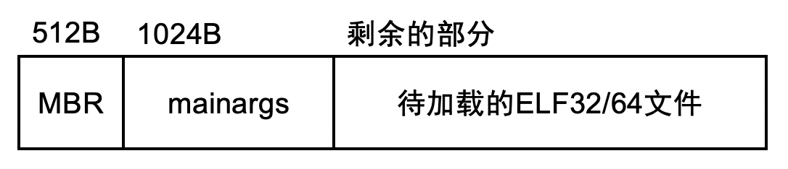

L3: 虚拟文件系统 (vfs)
关于实验环境设置、提交方法、评分规则等，请阅读实验须知。获取代码后，在
os-workbench中执行git pull origin L3下载代码。由于 kernel 目录将在后续的操作系统实验中使用，本次实验提交时，需要设置环境变量MODULE为L3(如果你将 export 写在了 Makefile 里，需要相应作出修改，否则将提交到过往的实验)。Soft Deadline: 2021 年 7 月 25 日
本实验在 L2 代码的基础上完成。需要提交以学号命名的 .pdf 格式实验报告 (保存在 kernel/ 目录下，在 L1/L2 的实验报告之后添加)。除非特殊情况，本次实验报告新增内容不建议超过 2 页 A4 纸。请在实验报告中描述你在实验中遇到的特别值得一提的事件，例如你代码的架构设计、特别精巧的实现、遇到印象深刻的 bug 等。
1. 背景
在这个实验中，我们在多处理器分时多线程的基础上实现线程安全的虚拟文件系统 (virtual file system, VFS) API，并且在 VFS 这一抽象层上实现若干不同的文件系统：
- 在存储设备 (
sda) 上支持完整文件和目录操作的文件系统 “ultra-simple file system” (ufs); - 虚拟的 procfs，提供一系列只读的、反映操作系统内部状态的文件；
- 虚拟的 devfs，将操作系统中的设备抽象为可以访问的文件，并为这些文件提供读写操作。
实现完成后，系统中的多个线程就能通过文件系统 API 读写文件——至此我们离现代操作系统就只有一步之遥：只需为每个线程附属一个独立的地址空间 (通过虚拟存储实现，参考 xv6 代码)，线程就变成了我们熟知的进程，操作系统就完整了。
2. 实验描述
2.1 实验总览
这个实验在 pmm 和 kmt (包括 dev) 的基础上，在磁盘设备 (驱动程序) 的基础上实现持久的文件系统，并且在线程级别支持文件描述符和文件/目录操作 API——vfs 的 API 和大家在 MiniLabs 中使用的系统调用几乎完全一样——在 Linux 中，我们的进程通过 syscall 指令进入进入操作系统后就会直接调用这些函数。
注意：本实验需要设备驱动程序部分正常工作
在 Lab 3 中，你需要合并 Lab 2 的官方测试用例 (dev 以及若干设备驱动的实现)。但即便你的 kmt 实现有问题 (例如终端设备在时钟作用下有一定的异常)，你也可以尝试注释掉线程创建的代码和中断处理程序的注册，Lab 3 的 Online Judge 只调用磁盘设备 (sda)，其代码相对简单。
我们的文件系统 API 做了相当的简化，例如并不支持动态的 mount (文件系统在系统启动时被 mount)。具体来说，你需要实现以下 API:
struct ufs_stat;
MODULE(vfs) {
void (*init)();
int (*write)(int fd, void *buf, int count);
int (*read)(int fd, void *buf, int count);
int (*close)(int fd);
int (*open)(const char *pathname, int flags);
int (*lseek)(int fd, int offset, int whence);
int (*link)(const char *oldpath, const char *newpath);
int (*unlink)(const char *pathname);
int (*fstat)(int fd, struct ufs_stat *buf);
int (*mkdir)(const char *pathname);
int (*chdir)(const char *path);
int (*dup)(int fd);
};
注意到我们的框架中还提供了 framework/user.h, 这个文件是用户进程 (假想有的话)/内核之间共享的，它定义了诸如 struct ufs_stat, 以及若干函数参数的含义，和目录文件的格式。例如 whence 中的 SEEK_SET, SEEK_CUR 和 SEEK_END：
#define T_DIR 1
#define T_FILE 2
#define SEEK_CUR 0
#define SEEK_SET 1
#define SEEK_END 2
#define O_RDONLY 00000000
#define O_WRONLY 00000001
#define O_RDWR 00000002
#define O_CREAT 00000100
struct ufs_stat {
uint32_t id, type, size;
};
struct ufs_dirent {
uint32_t inode;
char name[28];
} __attribute__((packed));
请不要修改上述框架中的定义，但文件系统的数据结构设计、线程同步等你都可以自由发挥！虽然文件系统的实现原理简单，但实现文件系统的工作量够大 (而且要小心处理很多对象的生命周期和 error handling)，请你做好调试代码的心理准备 😁。
2.2 VFS (Virtual File System) 模块
⚠️ 线程安全性
注意，除了模块的初始化 (
init) 之外，系统中创建的线程都可以并发地访问操作系统中的对象——但注意每个线程都有一份文件描述符的副本。
2.2.1 模块初始化
vfs->init() 负责初始化必要的数据，例如根文件系统的创建等。我们预期你会在 os->init() 时调用 vfs->init()。整个系统启动只调用一次 vfs->init()。
2.2.2 目录结构
在 Lab 3 中，我们实现树状的目录结构，三个文件系统实现：
- 通过
/访问 ufs，ufs 管理磁盘设备sda。ufs 支持文件系统内的链接 (linking)； - 通过
/proc可以访问 procfs。procfs 为每一个线程 (之后的进程) 创建一个目录，目录中可以提供该线程 (进程) 的信息，例如你可以通过/proc/1/name来得到线程的名字； - 我们预期通过
/dev访问 devfs，例如通过/dev/sda用文件系统 API 直接读写磁盘上的数据。
你可以理解为你的 vfs->init() 需要完成 /proc 和 /dev 的挂载——但你不需要实现 mount/unmount API，因此你可以在适当的时候 “硬编码” 以减少代码的复杂度。文件系统的目录树看起来和 Linux 有一定的相似性 (红色的节点表示目录，黑色的节点表示文件，三角形表示文件系统)：

vfs 模块中的 API 用于改变文件系统的结构和管理线程打开的文件。
2.2.3 路径与文件描述符
int (*chdir)(const char *path);
int (*open)(const char *pathname, int flags);
int (*close)(int fd);
在我们实现的操作系统中，每个线程都有一个 “当前路径”，指向文件系统中的一个存在的目录 (我们假设不会删除任何进程的当前目录，虽然实际的系统在这种情况下有 defined behavior；你可以考虑如何实现这一点)。之后线程执行所有的 API (chdir, open, read, link, unlink, mkdir) 时，如路径不是以 / 开头，则相对于当前路径进行路径解析。例如，如果当前目录是 /proc (procfs)，那么 1/name 就是一个合法的路径 (指向 /proc/1/name)。
- chdir 改变当前线程的当前路径为
path; 成功返回 0。 -
open 打开
path, 允许的打开方式 flags 定义在user.h:O_RDONLY: 只读；O_WRONLY: 只写；O_RDWR: 可读可写；O_CREAT: 如果文件不存在则创建。
如打开成功，返回一个非负整数编号的文件描述符 (最小的未使用的文件描述符，就像我们在 Linux 中见到的那样，打开失败返回负数)。文件描述符是指向操作系统对象 (具体来说，在我们的实现里就是文件) 的指针，并且可以通过文件描述符操作访问这个对象。
-
close 关闭一个文件描述符。
与 UNIX 文件系统的区别
注意允许 open 以只读的方式打开目录文件 。在我们的 ufs 中，目录文件以二进制形式存储struct ufs_dirent的数组，从而可以获得目录中文件的列表，从而无需readdir(getdents) 系统调用。
2.2.4 目录和文件操作
int (*mkdir)(const char *pathname);
int (*link)(const char *oldpath, const char *newpath);
int (*unlink)(const char *pathname);
int (*fstat)(int fd, struct ufs_stat *buf);
- 目录管理的 API 是 mkdir (创建目录)、link (创建文件的链接)、unlink (删除链接)，行为和 Linux/教科书保持一致，注意路径名如果不是以
/开头需要以当前线程的工作目录进行相对解析。注意只有磁盘上持久的文件系统支持链接——你不需要为 procfs 和 devfs 支持链接。 - 对一个打开的文件，可以使用 fstat 查看文件的属性，
struct ufs_stat定义在user.h：- id 是编号 (
>= 1)； - type 是
T_DIR(目录) 或T_FILE(文件)，其他数值为非法； - size 是文件大小的字节数。对于目录文件 (目录项的数组)，大小总是
struct ufs_dirent大小的整数倍。
- id 是编号 (
2.2.5 文件描述符操作
int (*write)(int fd, void *buf, int count);
int (*read)(int fd, void *buf, int count);
int (*lseek)(int fd, int offset, int whence);
int (*dup)(int fd);
把文件描述符看成是访问操作系统对象的 “指针”，文件描述符上的操作就非常容易理解：read, write 会从文件描述符内置的游标 (offset) 中读取数据并相应更新 offset, lseek 会改变游标的位置，其中 whence (user.h):
SEEK_CUR: 从当前位置开始；SEEK_SET: 从头部开始；SEEK_END: 从尾部开始。此时offset为 0 将会读到 EOF (end-of-file)。
dup 复制一份共享 offset 的文件描述符，返回最小可用的文件描述符。这些 API 的行为都和 Linux 一致。
2.2.6 挂载的文件系统
(1) ufs
ufs 是建立在设备
sda(磁盘) 上的持久数据结构。设备驱动提供了对 sda 的读写操作。你需要支持在 ufs 中创建目录、文件和链接。
ufs 默认挂载在 /，即除了 /proc 和 /dev 中的文件和目录之外，其他的文件和目录都属于 ufs；注意如果使用 open 打开 / (ufs)，并且读取其中的目录项，你能够读到 dev 和 proc (两个目录)，但它们的 inode 编号并不重要，你可以根据你的实现自行确定。
使用目录管理/文件管理的 API 可以修改 ufs 文件系统的结构，并且这些修改会最终被持久化到磁盘上——ufs 是磁盘上 (sda) 设备上的文件系统，你需要将文件系统这一数据结构，翻译成对 I/O 设备的读/写操作。注意我们的 dev 模块已经对磁盘进行了封装，将磁盘封装成了一个字节序列，可以支持任意位置的读写——这可能会简化你的编程，但要注意非对齐的读/写会引起额外的 I/O 操作——例如你希望写入磁盘的某个字节，就会导致包含这个字节的数据块被读取，然后再次被写入。鼓励你在你的系统中实现一层基于数据块 (块大小可以由你自行定义，例如 4 KiB) 的缓存。
(2) procfs
procfs 是虚拟的文件系统，不涉及任何设备。
不支持在 procfs 中使用 vfs API 创建文件/目录/链接 。procfs 中的目录 (/proc本身，以及形如/proc/[id]的目录) 需要支持 fstat 和read 操作，能读出正确的大小 (struct ufs_stat中的size字节数)，和struct ufs_dirent结构体。
procfs 好像是 “挂载” 在 /proc 下，procfs 中的目录是所有的线程的编号。每个线程对应的目录里至少有一个 “name” 文件，读取该文件可以得到线程的名字 (kmt->create 时的参数)。因此你的 procfs 实现看起来就是：
/
└── proc
├── 1
│ └── name
├── 2
│ └── name
├── 4
│ └── name
├── cpuinfo
└── meminfo
procfs 中的目录和文件会根据线程的创建/删除动态变化。因此你要小心以下情况：
- 使用 open 打开
/proc后读取到了编号为 10 的线程； - 打开
/proc/10/name成功； - 此时线程结束退出。
无论你的 read 是返回 EOF 还是依然成功都是合理的；但你的操作系统不能因此 crash。
(3) devfs
devfs 是虚拟的文件系统，不涉及任何设备。
不支持在 devfs 中使用 vfs API 创建文件/目录/链接 。
devfs 好像是 “挂载” 在 /dev 下，devfs 中至少需要包含以下文件：
- zero (
/dev/zero): 只读，永远返回 0 的序列； - null (
/dev/zero): 读写，读永远返回 EOF，写数据直接成功 (丢弃)； - random (
/dev/random): 只读，返回随机的字节序列。
同 procfs, 我们可以使用 vfs 的 API 打开、读取、写入这些文件。
2.2.7 mkfs 工具
你一定留意到 tools/mkfs.c 这个文件了。你需要实现这个 mkfs 工具，它接受三个参数 size, img 和 dir，将文件系统中的目录 dir 中的所有目录和文件 “打包” 到 img 镜像文件中，并将镜像文件的大小设置为 size MiB。例如，假设当前目录中有 fs-img:
fs-img
├── a.txt
├── b.txt
└── t
└── tmp.txt
则执行
mkfs 64 build/kernel-x86_64-qemu fs-img/
将会把 “fs-img” 作为你磁盘上文件系统 (数据结构) 的根 (/)，写入到 build/kernel-x86_64-qemu 中，并将该文件的大小设置为 64 MiB。简单起见，你可以假设 dir 中不存在任何形式的链接 (符号链接或硬链接)。Online Judge 会在 make 编译完成后、执行开始前调用你的 mkfs 工具，创建初始的镜像，然后开始执行文件系统的 workloads。我们在测试时，mkfs 创建的镜像不会超过 AbstractMachine 中磁盘的大小 (在当前的实现中是 256 MiB)。
注意 AbstractMachine 磁盘镜像有它固定的格式：

只有在 kernel 的 ELF 文件之后的空间才是可用的。为了在磁盘上建立文件系统，你有两种可行的方法，可以任意选择：
- 文件系统的第一个 block 从固定的位置开始，例如 1 MiB 的位置。这样你可能需要检查二进制文件的大小，在二进制文件过大时显示错误信息。
- 文件系统的第一个 block 由 ELF 文件决定，例如直接在 ELF 文件之后。你需要把这个 block 的编号 (例如扇区号) 写入到磁盘的引导扇区 (第一个 512 字节) 中。
2.2.10 坑
你会在实现文件系统的过程中遇到各种各样的小麻烦，例如你首先遇到的坑是 mkfs 需要将文件 “pad” 到指定的大小，磁盘才能正确写入。如果镜像文件只有 1 MiB，那么读取之后的字节都将得到 0。你读到这句话的时候，可能遇到过这个问题并且 debug 很久了——jyy 觉得调试和走过的弯路都是非常宝贵的经验。
每个进程有 “当前路径”，通常是文件系统中的一个合法目录 (至少在 chdir 返回的瞬间，否则 chdir 应该返回失败)。但是，系统中的其他线程 (甚至当前线程) 可能将这个目录删除。此时，你的系统的行为是什么？如果再考虑到 inode 的回收，你会发现这件事远比你想象得困难——你需要非常仔细地设计其中的对象结构、引用计数等，文件系统的实现并不只是 “磁盘上的数据结”，我们还必须正确实现它在内存中的视图。
你不妨在 Linux 系统里试一试，如果处于一个被删除的目录会发生什么——无论如何可以肯定的是，Linux 系统不会 crash，但你的操作系统可能就会了。当然，我们的测试用例中没有这种情况——我们的测试用例中所有的访问都是合法的。做对所有的 error handling 是个极具挑战的问题，甚至 Linux Kernel 都做得不够好。
文件系统的 API 看似简单，但其实随处都充满了各种各样的坑 (例如如何进行路径解析、如何将操作转发到对应的文件系统实现等等)。在这里 jyy 要警告大家：请留意你项目代码的组织和设计。如果你直接 “不管一切” 地编程，很快就会得到膨胀且难以维护的代码。冷静下来读一读 xv6 的代码是个不错的选择。
3. 正确性标准
3.1 文件系统实现
注意：调试输出
同上一个实验，请尽量不要打印多余的输出。虽然我们的检查代码会进行一定的过滤，但因为多处理器的并发，你在其他处理器上的输出可能会影响我们的检查输出，从而导致 Wrong Answer。因此我们建议你使用自己的 log 或 printk 函数 (而不是 printf; 我们的测试程序会使用 printf)，且它们的行为由预编译指令控制，仅在你本地编译时才打印数据。
在这个实验中，我们会首先使用你的 mkfs 工具初始化文件系统，然后启动虚拟机、创建若干线程，连续调用文件系统 API，根据文件系统 API 的输出决定你实现的正确性。在 easy tests 中，我们只创建一个线程，顺序地执行文件系统操作，并检查文件系统的功能实现。在 hard tests 中，我们会创建若干线程执行一系列的文件系统操作。执行的操作可能有一定的随机性，并且因为并发程序的不确定性，你将会预期每次执行的结果都有一些不同，但你需要实现可串行化 (serializable) 的文件系统：文件系统操作的结果看起来像是所有执行过的文件系统操作排成某个顺序执行的。最简单的实现可串行化的方式就是为文件系统操作加上互斥锁，可以使用信号量的 P/V 操作实现。
注意：上锁的粒度
磁盘是慢速设备；一个文件系统的操作可能较长，使用自旋锁可能会导致中断丢失、饥饿等后果 (饥饿意味着你无法达到最小的性能要求从而 Wrong Answer)。如果你希望借用 Lab2 中的同步原语，请使用信号量实现的互斥锁，在线程无法获得锁时睡眠。
所有测试用例的文件系统调用均在使用 kmt->create 创建的线程中调用——因为文件描述符是线程的一部分，我们不会在操作系统启动/初始化/中断时执行对文件系统的操作。
为了尽可能地让所有同学能完成 Lab3，我们的测试用例虽然会创建线程，但线程不会终止 (执行完所有操作的线程会执行死循环或 yield)，也不调用信号量 (会调用自旋锁)，这样即便你的 Lab2 实现有一定问题，也可以通过一定的测试用例。
3.2 数据的持久性
在这个实验中，我们不要求你实现满足崩溃一致性的文件系统，也没有提供 fsync 的接口：我们假设你的数据满足 “eventual consistency”，即磁盘上的数据结构在没有更多操作到来时，会达到一致的状态。我们的测试数据会在所有的磁盘操作之后等待一秒钟 (1000ms)，然后关闭虚拟机。再次重启后，ufs 文件系统中的数据应当被正确持久化，例如之前创建的目录和文件此时应该能够正确访问，能读取出正确的数据。如果你使用了类似 buffer cache 的结构对磁盘的读写进行了缓存，请你确保在在进行文件系统调用之后的 1s 内将数据持久化到磁盘。例如：
- 你可以选择最简单的实现，即每个文件系统操作都立即写入磁盘，在最后一个系统操作返回时，磁盘即处于 consistent 的状态。
- 你可以构建自己的缓存，有一个后台的 daemon (类似 jbd) 完成磁盘的写回。我们建议写回的频率在 500ms，这样有足够的时间将持久数据写入磁盘 (虽然对于实际的系统，写回的频率会更低一些，以减少磁盘的带宽)。
4. 实验指南
在开始实现之前——再回顾一下这句话：文件系统是一个磁盘上的数据结构。所以，就把它当成是一个数据结构问题，用 “抽象数据类型” 去考虑它的实现。
4.1 文件系统实现：基础
实现文件系统中最 “基础” 的操作是给定一个路径 (绝对或相对当前线程的当前路径)，对路径进行解析，然后返回相应的 inode。道理看起来简单，但却涉及文件系统的各个部分，也许有些细节就是你没有考虑到的。
首先，inode 不仅是存储在磁盘上的数据结构 (针对 ufs 而言)，还需要在内存中分配；虚拟的文件系统 (例如 procfs) 还需要维护一些 inode 私有的内存数据 (例如 procfs)。如何管理这些数据？如何管理内存中 inode 的生存周期？你立即会想到一些问题：
- 在解析路径时，例如
/this/is/a/very/long/path时，我们会历经多个 inode 的访问，例如/,/this,/this/is, ... 我们会在这些 inode 上分别执行 open 操作，直到确定要打开的 inode 为止； - 线程 (进程) 有自己的 “当前目录”，所有涉及路径的系统调用，当给定的路径不是以
/开头时，都是相对当前进程的 “当前目录” 进行解析的； - 打开的 inode 会历经各种操作，例如从文件系统中 unlink。此时可能有一个进程持有该 inode 的文件描述符，并且正在向文件读写数据。此时会发生什么？是否会有一方返回失败？请你在 Linux 中试一试。
只要你在内存中实现 struct inode, 你就必须小心地管理它的生存周期——当线程创建、销毁、文件关闭……各种时刻，你都要小心地维护内存中的 inodes，使得它们在不再使用时 (或者是在可以释放后一段时间后) 能被安全地释放，并且不引起 double-free, use-after-free 等问题。引用计数是个很好的机制，但你必须要小心地管理引用——一旦某个引用发生复制时你忘记增加引用计数，就意味着程序里可能会出现严重的问题。
路径解析的核心是给定一个 inode (假设你已经载入内存，并且确保是一个目录文件)，然后读取这个目录文件中的目录项 (通过文件系统的 read 操作)，找到名字匹配的 inode 编号，递归这个过程就能完成路径解析——我们也鼓励你实现成递归的，这会大大简化你的实现。
路径解析的另一个有趣的问题是处理 /proc, /dev 这样的挂载点 (mount point)。你应该能想到一个通用的实现挂载的方案，这样你的文件系统能挂载到目录树的任何地方——Linux/UNIX 的确就是这样实现的。
4.2 多个文件系统的共存
在路径解析的过程中，你会意识到我们每个文件系统的 “数据结构” 都不太一样：
- ufs 的文件和目录都以一个类似 UNIX 文件系统的设计方式存储在磁盘上，因此对 ufs 文件和目录的修改需要翻译成
sda设备上的读写操作； - procfs 的目录是动态创建的 (并且不在持久存储上，而是根据当前的线程)，因此你需要遍历系统中的
struct task，并且将线程信息写入缓冲区中，然后返回给对 procfs 的 read； - devfs 的每个文件都有一个对应的设备 (可能是虚拟的、可能是实际存在的)，对于实际存在的设备，你需要调用设备的 read/write; 而对于虚拟的设备，你需要向读者提供正确的数据，或是模拟向设备的写入。
你需要为每一个文件系统的都实现一套文件/目录的 API——这也就是为什么这个实验显得复杂的原因。如果你使用紧耦合的方式实现，你的代码很容易会陷入不可维护的泥潭；例如仅仅是写一个 “代码框架” 就已经在视觉上看起来不太友好了：
int vfs_write(int fd, void *buf, int count) {
struct file *f = current->oflies[fd]; // 取出数据结构
struct dev *d;
if (!f) goto abort;
...
switch (f->inode->type) {
case FS_PROCFS:
...
break;
case FS_DEVFS:
d = getdev(f);
switch (d) {
case DEV_NULL:
...
case DEV_RANDOM:
...
default:
// 其他设备，转发给设备驱动
...
}
break;
case FS_UFS:
...
break;
}
...
abort:
...
}
因此，在这里有必要做一点 “面向对象编程”。我们不妨把 “文件系统” 和 “文件系统中的文件 (包括目录文件)” 都以对象的形式包装起来。你立即就想到了，我们的框架代码其实已经做了很多面向对象的封装了！例如我们的整个操作系统的 “模块” 就是面向对象的，一个模块就是一个对象。另外一个值得大家参考的是我们对 I/O 设备进行的封装：
typedef struct devops {
int (*init)(device_t *dev);
ssize_t (*read) (device_t *dev, off_t offset, void *buf, size_t count);
ssize_t (*write)(device_t *dev, off_t offset, const void *buf, size_t count);
} devops_t;
然后我们就能进行 “面向对象” 的调用了：
d->ops->read(d, offset, buf, count) // d: pointer to struct dev
这样的写法在 C++ 中可以更精简，例如 C++ 的对象自带函数，可以省略 “this” 的调用。以及 C++ 支持类的继承和虚函数——虚函数就是用类似 devops_t 实现的！每个对象的头部都有一个称为 “vtable” 的数据结构，指向了它虚函数实现的地址。
d.read(offset, buf, count); // d: reference of a Device object
你也可以对文件系统/文件的操作做出类似的封装，可以大幅增加你代码的可维护性，你在阅读时也更容易梳理你实现的正确性。
4.3 文件系统实现
这里有很多微妙的坑 (甚至测试用例无法完整地覆盖到它们)。例如，当你遍历 procfs 时，你需要遍历系统中所有的线程；而与此同时，线程可能被创建/回收。一个复杂系统的实现很容易在这种情况下产生数据竞争 (几乎总是 bug，例如你可能会读取一个尚未初始化好的线程) 或是死锁。这样的问题在测试中恰恰是很难暴露的：你很难会想到构造这样的测试用例，以及实际的系统可能会在更 subtle 的情况下出错。
我们无法完整列举你所有可能遇到的坑——但你在完成实验的过程中，你一定会感叹做好一定的设计是多么重要。以及，无论你做了多少设计，在实际中都可能遇到奇奇怪怪的问题，你也真正理解了 lockdep, AddressSanitizer/ThreadSanitizer 这样的工具存在的必要性。总之这个 “编程大实验” 会让你真正体会一些计算机系统设计/实现的困难。Happy hacking!
4.4 福利
我们为大家提供了 Hard Test 类似的 workload，用于创建一个目录树 (假设初始时，线程的当前工作目录为 /)。文件在 vfs-workload.inc。大家可以直接编写一个 C 文件，然后：
void run_fs_test() {
#include "vfs-workload.inc"
}
来将 workload 直接粘贴到 C 代码中。这也是你们生成测试用例的方法——如果你们完成了一个自动的随机测试用例生成工具，你可以将系统调用的序列写入一个 .inc 文件中，然后它被 include 到代码中执行。在实际的测试中，我们的目录树会比给出的 workload.inc 稍大一些，但不会大太多。
在执行完 workload 之后，我们会递归地遍历目录，大致的代码如下：
static void traverse(const char *root) {
char *buf = pmm->alloc(sz); // asserts success
struct ufs_stat s;
int fd = vfs->open(strcmp(root, "") == 0 ? "/" : root, O_RDONLY), nread;
if (fd < 0) goto release;
vfs->fstat(fd, &s);
if (s.type == T_DIR) {
while ( (nread = vfs->read(fd, buf, sz)) > 0) {
for (int offset = 0;
offset + sizeof(struct ufs_dirent) <= nread;
offset += sizeof(struct ufs_dirent)) {
struct ufs_dirent *d = (struct ufs_dirent *)(buf + offset);
if (d->name[0] != '.') { // 小彩蛋：你这下知道为什么
// Linux 以 “.” 开头的文件是隐藏文件了吧
char *fname = pmm->alloc(MAX_PATH_LEN); // assert success
sprintf(fname, "%s/%s", root, d->name);
traverse(fname);
pmm->free(fname);
}
}
}
}
release:
if (fd >= 0) vfs->close(fd);
pmm->free(buf);
}
我们会调用 traverse(""); 完成目录树的遍历。